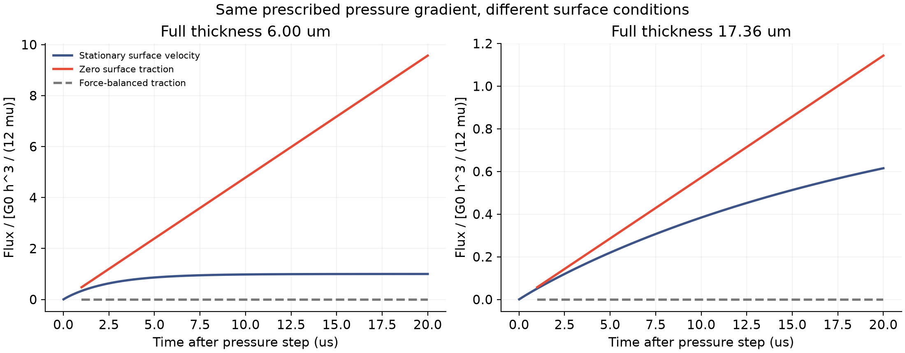
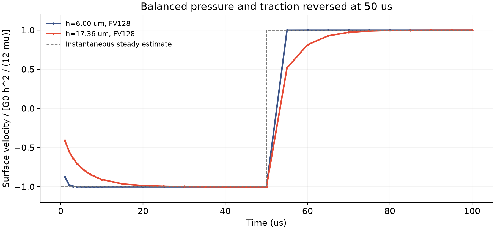

独立局部流动参照 · 2026-11-13
同样的压力驱动，
为什么流量可以不同？
压力推动液体，界面也能施加切向应力。新的局部参照把这两种作用分别作为输入，计算内部流动、界面速度和功。
现在可以共同核对哪些量？
流动保留自己的状态
使用膜厚方向有限体积离散，按物理密度与黏度演化。可以分段改变压力与切向应力，界面速度是计算输出。
输入的功有明确去向
分别记录压力功、两个界面的功、动能变化和黏性耗散；同时核对施加的总力与动量变化。
这里没有拟合松弛速率。所有密度、黏度和代表厚度来自此前冻结的原算例，经典 Stokes 方程和有限体积算法本身不是本项目的新贡献。
先做三个边界条件明确的对照
压力梯度都为 G₀=1 Pa/m。蓝线沿用此前“表面速度固定为零”的参照；红线改为零切向应力，液层整体加速；灰线用切向应力抵消压力合力，净通量为零，但内部剪切与界面运动仍可发展。

| 厚度 | 10 μs：固定表面速度 | 10 μs：零切向应力 | 10 μs：合力抵消 |
|---|---|---|---|
| 6.00 μm | 0.981 | 4.785 | 0.000 |
| 17.36 μm | 0.384 | 0.572 | 0.000 |
仅给压力差，尚不足以唯一确定这个局部问题的通量；还要说明界面如何受力、如何运动。因此后续边缘交换模型需要把流动与界面功放在同一个物理参照里检查。
改变外力时，流动不会丢掉历史

这次通过了什么检查？
32、64、128、256 个横向单元与独立解析界面响应比较，误差随加密下降；最细归一化误差为 1.283e-04。两种厚度、三种输入历史共六组检查中，逐段能量相对残差最大 1.314e-15，动量相对残差最大 2.652e-15，耗散非负。零应力加速流与合力抵消的通量解析对照也通过。
这些结果验证当前有限体积参照的算术、边界功和部分空间离散；没有证明真实边缘通量、牵引力或自由膜动力学已经正确。
下一步如何接回原始 C1？
用物理表面定律决定应力，进一步解析局部边缘几何，再把液量、表活和功的端口与运动膜连接。当前原生模型尚未采用这段参照，也没有新增交换速率或改动正在运行的 5 微米计算。
原 2% 时间、10% 空间及 10／50／200 微秒检查、物理通量／牵引力、交换系数、薄膜元厚度比、整体条纹与保留工况实验仍全部开放。
相关原始研究：Lalli 与 Giusti（2024，JFM 986，A7）的界面动量条件与内部／界面速度区分。这里的非稳态平直应力端口问题为独立推导，没有使用磁性、颗粒或拟合表面黏度。